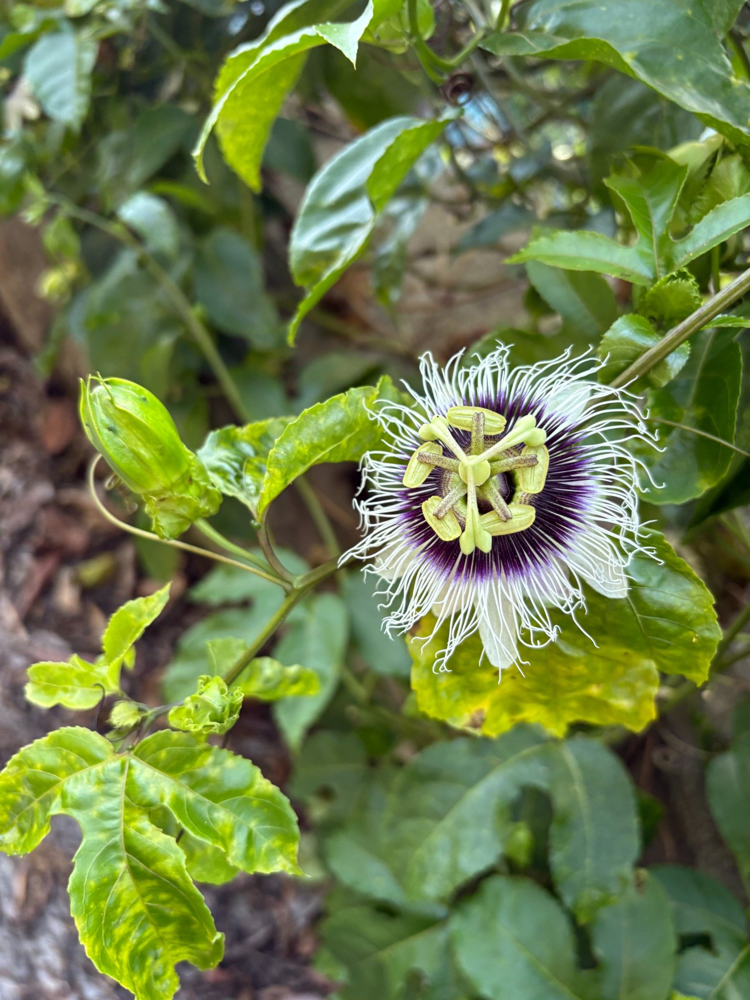
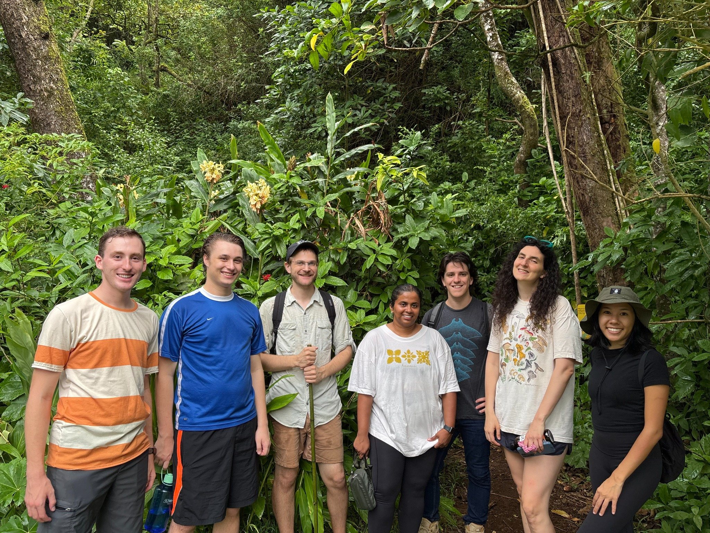
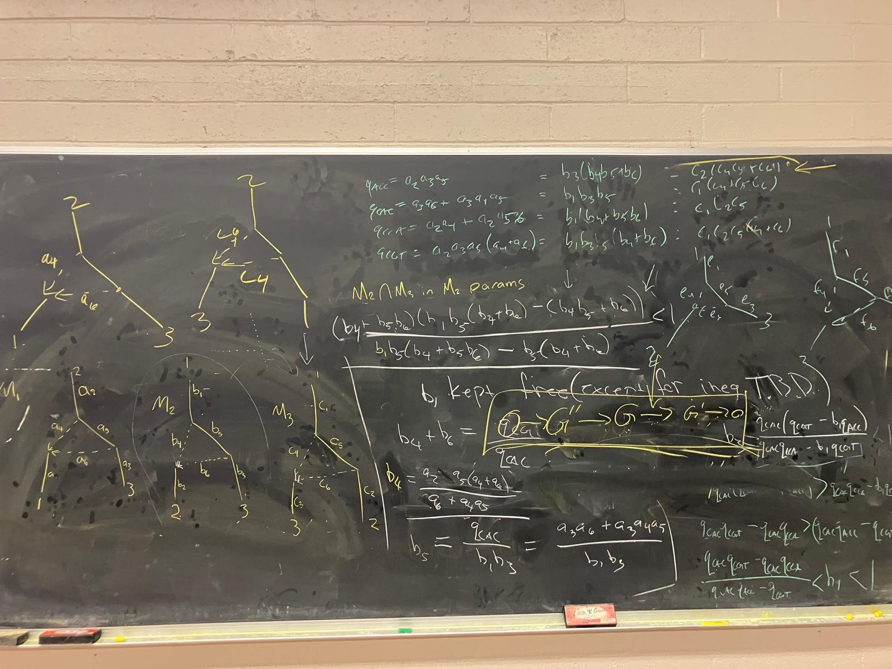
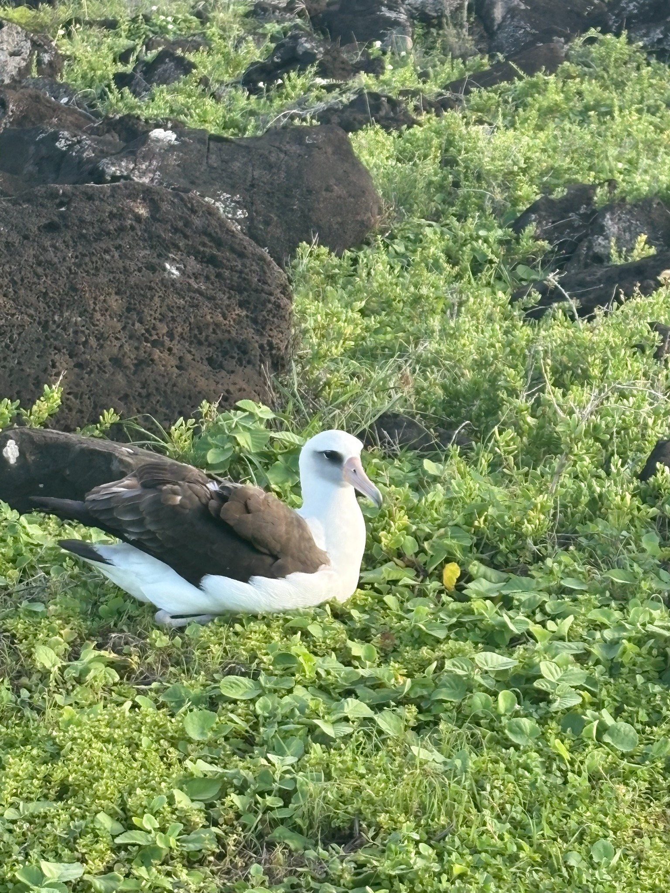
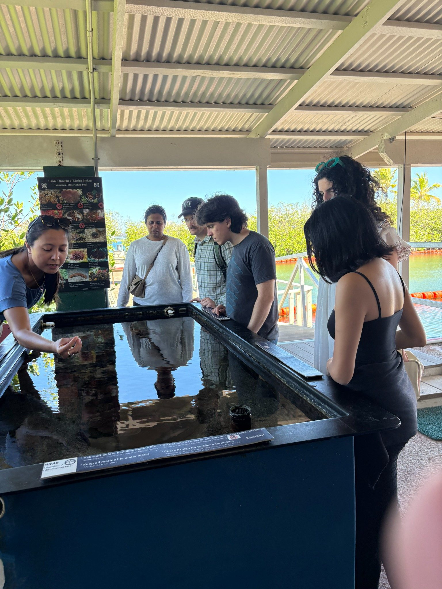
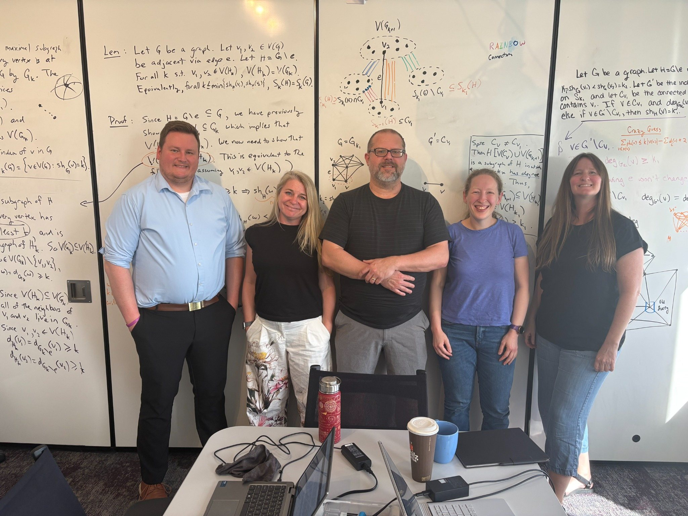

Mathematics for living systems
My research develops algebraic and statistical methods for models arising in biology, especially phylogenetic networks, chemical reaction networks, ecological systems, and identifiability questions.
Algebraic statistics
Using geometry, computation, and combinatorics to understand statistical models and inference.
Evolutionary biology
Studying when phylogenetic networks and their parameters can be recovered from data.
Building research spaces where people can do good mathematics together.
My work as a PI, organizer, graduate chair, and mentor is centered on creating collaborative environments for students and researchers—especially in settings where geography can make academic networks feel farther away.
At a glance
publications & preprints
Across algebraic statistics, evolutionary biology, systems biology, graphical models, and computation.
NSF awards
Including CAREER, Innovations in Graduate Education, and Emerging Mathematics in Biology projects.
Graduate Chair
Serving the mathematics graduate program at UH Mānoa.
Research, teaching, and place




